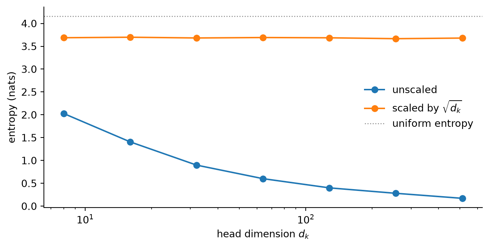

A derivation of scaled dot-product and multi-head attention, including variance, masking, gradients, and computational cost.
Author
Diego Filippo Marino
Published
August 13, 2026
The compact formula for attention hides three separate operations: a learned similarity metric, a row-wise probability model, and a content lookup. Pulling those pieces apart is useful because most later improvements change only one of them.
The operation and its shapes
Let a sequence be represented by X\in\mathbb{R}^{n\times d_{\text{model}}}. A single head forms
Q=XW^Q,\qquad K=XW^K,\qquad V=XW^V,
where Q,K\in\mathbb{R}^{n\times d_k} and V\in\mathbb{R}^{n\times d_v}. Scaled dot-product attention is (Vaswani et al. 2017)
The score S_{ij} measures how strongly query position i selects key position j. Each row of P is a categorical distribution. The output o_i is therefore a data-dependent convex combination of value vectors.
Adding the mask before softmax makes every illegal probability exactly zero in ideal arithmetic. In finite precision, implementations use either negative infinity or a sufficiently negative representable value.
Why divide by \sqrt{d_k}?
Suppose the components of q and k are independent, centered, and have unit variance. Then
The unscaled logit has standard deviation \sqrt{d_k}. As the head dimension grows, the largest logit tends to dominate the softmax, reducing its entropy and concentrating the Jacobian near zero. Scaling restores an order-one logit variance.
import numpy as npimport matplotlib.pyplot as pltrng = np.random.default_rng(7)dims = np.array([8, 16, 32, 64, 128, 256, 512])entropy_scaled, entropy_raw = [], []for d in dims: q = rng.normal(size=(400, d)) k = rng.normal(size=(400, 64, d)) logits = np.einsum("bd,bnd->bn", q, k)for values, scale in ((entropy_raw, 1.0), (entropy_scaled, np.sqrt(d))): z = logits / scale z -= z.max(axis=1, keepdims=True) p = np.exp(z) p /= p.sum(axis=1, keepdims=True) values.append(np.mean(-np.sum(p * np.log(p +1e-30), axis=1)))fig, ax = plt.subplots(figsize=(7, 3.6))ax.plot(dims, entropy_raw, "o-", label="unscaled")ax.plot(dims, entropy_scaled, "o-", label=r"scaled by $\sqrt{d_k}$")ax.axhline(np.log(64), color="0.55", lw=1, ls=":", label="uniform entropy")ax.set(xscale="log", xlabel=r"head dimension $d_k$", ylabel="entropy (nats)")ax.spines[["top", "right"]].set_visible(False)ax.legend(frameon=False)plt.tight_layout()plt.show()

Figure 1: Mean attention entropy with and without the square-root scaling. Each point averages 400 random attention rows over 64 keys.
The experiment is deliberately distributional rather than model-specific. It isolates the argument behind the normalization in Equation 1: without it, increasing width changes the effective temperature of attention.
This matrix is positive semidefinite and has a null direction along the all-ones vector. Adding a constant to every logit does not change the distribution. The same invariance explains the standard stable implementation
where each O_r has its own projected queries, keys, and values. For the common choice d_k=d_v=d_{\text{model}}/h, the projection and attention FLOP counts remain approximately constant as h changes:
\underbrace{4nd_{\text{model}}^2}_{Q,K,V,O\text{ projections}}
+\underbrace{2n^2d_{\text{model}}}_{QK^\top\text{ and }PV}.
Heads do not provide free capacity. They partition the channel dimension into several learned similarity spaces. Very small d_k constrains each compatibility function, while a single wide head forces one attention distribution to serve every subspace.
Memory is not the same as arithmetic
The two matrix multiplications require O(n^2d) arithmetic. A literal implementation also writes S and P, each with n^2 entries. At sequence length 16,384, one FP16 matrix for one batch-head pair occupies 512 MiB. The quadratic intermediate, not only the quadratic FLOP count, is the systems problem.
This distinction leads directly to IO-aware kernels such as FlashAttention: equation Equation 1 stays unchanged, but its evaluation order is reorganized so that S and P never reside in high-bandwidth memory as complete matrices.
What the equation does not guarantee
Attention weights are conditional routing coefficients, not a causal explanation. A high value of P_{ij} says that value v_j contributes strongly to output o_i under the current parameterization. Residual connections, value projections, later layers, and correlated features complicate any interpretation beyond that statement.
The normalization also creates competition. Increasing one logit decreases other probabilities in the row, even when those keys are unrelated. This coupling is useful for selection, but it means that attention is not a set of independent relevance scores.
Practical checks
A minimal implementation should satisfy three invariants:
Every unmasked row sums to one within numerical tolerance.
Masked probabilities are zero.
Shifting a complete score row by any scalar leaves the output unchanged.
Those tests catch axis errors and many masking mistakes before they become training pathologies.
References
Vaswani, Ashish, Noam Shazeer, Niki Parmar, et al. 2017. “Attention Is All You Need.”Advances in Neural Information Processing Systems 30. https://arxiv.org/abs/1706.03762.
Citation
BibTeX citation:
@online{marino2026,
author = {Marino, Diego Filippo},
title = {Attention, from {Logits} to {Context}},
date = {2026-08-13},
url = {https://diegofilippomarino.github.io/Eigenholm/posts/attention-from-logits-to-context/},
langid = {en}
}